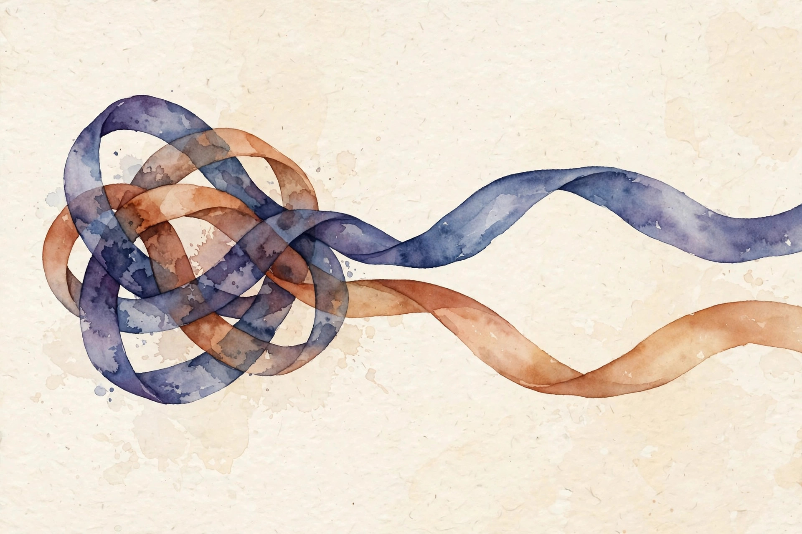

Companion · narrated from the lesson document
EM needs the exact posterior p(z|x). In a deep generative model the posterior has no closed form. What now? This companion walks the full arc of Unit 11: variational inference as ELBO optimization over a Q family, the VAE and the reparameterization trick, PCA as variance maximization, and ICA as unmixing independent sources.
From the lesson The idea, and every number beside it, comes from the cited section of lesson-11-vi-pca-ica.md. The phrasing is the companion's.
Illustration Invented by the companion: an analogy, a toy with made-up values, or a what-if. Never lecture content.
companion Companion voice: the idea above the tag is from the lesson. The generalization below it is the companion's.
Provenance: no lecture transcript exists for this unit, and no lecture video is named in the lesson. The lesson's Source mapping states that SRC-01 section 11.5 and chapters 12 and 13 were read in substantial part on 2026-10-06. Whitening and eigenfaces are standard background beyond the notes' inspected text and are labeled as such. k-means++ appears nowhere in this unit. Leaf rows carry SOURCE ATTRIBUTION PENDING until the RUN 6 pass. One arithmetic note: the lesson reports 98.9 percent variance kept. Recomputation from its eigenvalues gives 98.98. The lesson's value is shown with the recomputation beside it.

Section 1 · SL-01 · C01, C02
From the lessonSL-01 §Source anchor, §Mental model
EM's E-step is "set Q to the true posterior." VI relaxes it: "set Q to the best posterior-shaped object inside a tractable family." The VAE extends EM to models parameterized by neural networks. When the posterior p(z|x) under parameters θ is intractable (as in the neural model 11.18-11.19), restrict Q to a family Q and optimize max_{Q in Q} max_θ ELBO(Q, θ) (equation 11.20).
The ELBO is still a lower bound for any Q (U10 SL-04), so maximizing it over Q and θ jointly is still principled. The gap between the ELBO and the true likelihood is exactly KL(Q || p(z|x)): VI is posterior approximation by KL minimization (notes equation 11.17).
From the lessonSL-01 §Mean field, §Correctness checks, §Failure case
For discrete latents the notes name the mean-field assumption: Q(z) = Q₁(z₁) ... Q_k(z_k), independent coordinates (page 163). For continuous latents: Gaussian Q with diagonal covariance. ELBO ≤ log likelihood always: if your ELBO exceeds a known likelihood, there is a bug. Enlarging the Q family can only tighten the bound. The failure case: a Q family too rigid, diagonal Gaussian on a strongly correlated posterior. The bound stays loose and the learned model underfits. The notes warn the Gaussian Q can be "very far from a good approximation" (page 165).
The gap between the ELBO and the true likelihood is exactly KL(Q || p(z|x)). VI is posterior approximation by KL minimization.
Section 2 · SL-02 · C03
From the lessonSL-02 §Source anchor
Model: z ∼ N(0, I), x|z ∼ N(g(z, θ), σ²I), with g a neural net (11.18-11.19). Encoder: Qᵢ = N(q(xⁱ, φ), diag(v(xⁱ, ψ))²) (11.21). q, v are neural nets ("encoder"), g is the "decoder." Gradients over θ are easy. Gradients over φ, ψ are hard because the sampling distribution depends on them. Trick (11.24): z = q(x, φ) + v(x, ψ)·ξ, ξ ∼ N(0, I).
From the lessonSL-02 §Mental model, §The VAE objective
Separate the randomness from the parameters. A Gaussian sample z ∼ N(μ, σ²) is the same object as μ + σ·ξ with ξ ∼ N(0, 1). After the rewrite, the expectation is over ξ, which does not depend on φ or ψ, and the gradient flows through the deterministic path μ + σ·ξ. Sampling becomes a differentiable operation. ELBO(φ, ψ, θ) = Σᵢ E_{z∼Qᵢ}[log p(xⁱ, z) under parameters θ − log Qᵢ(z)]. Optimize by gradient ascent over all three parameter sets jointly (no alternating needed, page 165). The ELBO splits (11.15) into reconstruction E[log p(x|z)] minus KL(Q || prior): decode well, stay near the prior.
| 1-D latent, 2-D data on a noisy circle Illustration | Value |
|---|---|
| VAE with k = 1: ELBO converges to | −1.42 nats/point |
| The learned g | traces the circle |
| Latent codes | order by angle |
Illustration The reparameterization demo. Type μ and σ. The toy draws ξ ∼ N(0, 1) samples (invented draws) and shows z = μ + σ·ξ: the same Gaussian, with the randomness separated from the parameters.
μ: σ:
From the lessonSL-02 §Correctness checks, §Failure case
KL ≥ 0, so monitor it. KL collapse (KL → 0, decoder ignores z) is the classic VAE failure. The reparameterized gradient must have lower variance than the score-function alternative: that is the point of the trick. A powerful decoder models p(x) directly and the latent carries nothing. Diagnose via KL → 0. Mitigate by KL annealing or a weaker decoder.
Separate the randomness from the parameters. Then the gradient flows through the deterministic path.
Section 3 · SL-03 · C04, C05, C06, C07, C08
From the lessonSL-03 §Source anchor, §Mental model
Two features measure the same thing in different units (mph vs kph). How do you detect and remove the redundancy automatically? Data has variance (information) spread across d directions. PCA finds the direction with the most variance, then the next orthogonal one, and so on. Keep the top k: the best k-dimensional linear summary of the data in the variance sense. The directions are the eigenvectors of the sample covariance, sorted by eigenvalue.
From the lessonSL-03 §Procedure, §Whitening
The procedure: (1) standardize, zero mean and unit variance unless scales are comparable. (2) compute the covariance Σ = (1/n) XᵀX. (3) eigendecompose, keep the top k eigenvectors. (4) project: z = U_kᵀx. Whitening rescales: z = Λ^(−1/2) Uᵀx gives identity covariance. It is standard preprocessing for ICA (SL-04): it removes second-order structure so the unmixing step sees only higher-order structure. Eigenfaces are the canonical application: PCA on face images, the classic demonstration that real high-dimensional data lives near a low-dimensional subspace. The notes' inspected text does not show eigenfaces. Taught as standard background.
Illustration The variance keeper. The lesson's eigenvalues: 2.26, 1.62, 0.04. Choose k. The toy reports the variance kept and the reconstruction error, which equals the sum of the dropped eigenvalues.
k:
From the lessonSL-03 §Correctness checks, §Failure case
Eigenvalues ≥ 0 (covariance is PSD): assert this. Reconstruction error with k components equals the sum of dropped eigenvalues: verify it. The failure case: PCA on unstandardized features with mismatched scales. The largest-scale feature dominates the first component regardless of information content. Standardize first.
Keep the top k eigenvectors: the best k-dimensional linear summary of the data in the variance sense.
Reconstruction error equals the sum of the dropped eigenvalues. The loss of compression is exactly priced.
Section 4 · SL-04 · C09, C10, C11, C12
From the lessonSL-04 §Source anchor, §Mental model
Two microphones record two speakers at once. Each recording is a different mixture. Can you recover the separate voices? x = As with s independent sources, A unknown square mixing matrix. Goal: find W = A⁻¹ to recover s = Wx. PCA would give uncorrelated mixtures. The voices would still be mixed. ICA goes further: find the linear unmixing that makes the outputs as independent as possible. Non-Gaussianity is the signal: mixtures look Gaussian by the central limit theorem, so maximize non-Gaussianity to unmix. Cocktail party solved.
From the lessonSL-04 §Ambiguities, §Correctness checks
You can never recover the order of the sources (permutation) or their volumes (scaling): both leave the observations identical. Every ICA result carries these two caveats. They rarely matter in practice. Density transform (13.2): p_x(x) = p_s(Wx)|W|. W must be invertible: monitor the condition number.
Illustration The scale-ambiguity prover. A fixed 2×2 mixing matrix A and sources s are invented for the toy. Type a scale factor c. The toy scales one column of A by c and the matching source by 1/c, and shows the mixture x unchanged.
c:
From the lessonSL-04 §Failure case
Gaussian sources: ICA cannot separate them. A rotation of independent Gaussians is still independent Gaussians. The non-Gaussianity assumption is load-bearing.
Mixtures look Gaussian. Maximize non-Gaussianity to unmix.
The order and the volumes are unrecoverable. Both leave the observations identical.
Section 5 · Synthesis
From the lessonSL-01 to SL-04
The arc, end to end. When the posterior is intractable, VI relaxes EM's E-step: optimize the ELBO over a tractable Q family, and the gap to the likelihood is exactly KL(Q || p(z|x)) (SL-01). The VAE parameterizes both model and posterior with neural nets, splits the ELBO into reconstruction minus KL, and makes sampling differentiable by separating randomness from parameters (SL-02). PCA finds the max-variance subspace: eigendecompose the covariance, keep the top k, and the reconstruction error equals the dropped eigenvalues exactly (SL-03). ICA unmixes independent sources by maximizing non-Gaussianity, up to permutation and scaling that no method recovers (SL-04).
From the lesson§Research reading, §Role bridges
Where the unit points next, in the lesson's own forward links. The extension: ICA on synthetic mixed audio. The falsifiable claim: the correlation of each recovered source with some true source exceeds 0.95 after best permutation. Diffusion (U12) is the modern successor to GANs for images. For the ML engineer: PCA is the default dimensionality reduction and denoising step, and whitening is standard preprocessing for ICA pipelines. For the research engineer: the reparameterization trick is the pattern behind all differentiable sampling in modern generative models. For the research scientist: VI is the approximate-inference framework. Know its failure modes (rigid Q, KL collapse) before trusting an ELBO.
Wisdom index
Each nugget states the idea in plain words, why it matters, and the transferable principle. Every one is anchored to its lesson section.